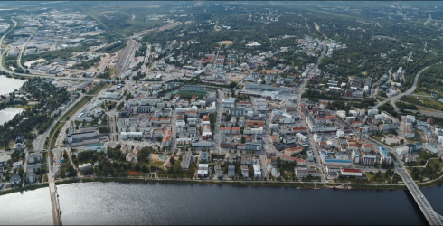

About
-
Rovaniemi, The Official Hometown of Santa Claus ®
- Experience a living story that will change you forever. Your magical journey here at Arctic Circle, Lapland, Finland is guided by the values of authenticity, giving, creativity and constant presence. It's also your moment to meet Santa Claus any day of the year and write a chapter in your life's story while exploring Rovaniemi area rich in history and curious details.
-
santa claus
-
the arctic circle
-
arctic capital
 -
sustainable rovaniemi
Spellbinding nature and phenomena, Lappish traditions and culture, urban life and easy access activities make The Official Hometown of Santa Claus® a unique place to visit.
-
only
-
AMesmerizing Rovaniemi is the only travel destination in Lapland nestled right at the Arctic Circle - a thrilling adventure awaits those who are curious enough to cross this significant geographical line.
-
snow and ice
-
polar night
-
northern lights
-
midnight sun
-
Rovaniemi is full of breathtaking phenomena and natural elements. Summer with Midnight Sun, magical Northern Lights, breathtaking Autumn colours and mystical Polar Night all provide memories for a lifetime.
-
full of
-
nightless nights
-
- Unbelievable Midnight Sun in Rovaniemi
- White nights on the Arctic Circle and above
- The incredibly bright Midnight Sun is also known as the nightless night or polar day. Midnight Sun is an unreal time of the year when the bright days turn into golden light nights.
- Sunshine for 24-hour
- On the Arctic Circle the sun stays above the horizon one 24-hour period each summer, around the time of Midsummer festivities. Officially Midnight Sun only appears on the Arctic Circle and above it. As Rovaniemi sits precisely on the Arctic Circle, this is where the fun starts!
- The sun never seems to set in the summer in the Arctic Capital. The days are long and light, and the fun activities and adventures continue well into the wee hours.
- Midnight Sun
- What is the Midnight Sun? Sun doesn't set during the Midnight Sun season. In Rovaniemi it's light around 24 hours from early June until early July, but the white nights season lasts the whole summer. The Midnight Sun is an opposite phenomenon to Polar Nights.
- When is the Midnight Sun Season? Midnight Sun in Rovaniemi from early June until early July.
- Experiencing the incredible Midnight Sun
- The Midnight Sun can be experienced in a variety of ways in Rovaniemi, from hiking the tops of fells to boating on rivers and getting cosy and relaxing around campfires. Expert guides show special spots and, with their in-depth information and stories on the phenomenon, broaden the overall experience substantially. The locals say there's not only more hours in the day but also loads more energy - so sleeping is for later!
- When is the Arctic Summer?
- Nights are white throughout the summer from late May until August. The bright summer of Lapland is between June and August. The colourful Autumn with Northern Lights and crispy white winter offer their own kind of experiences in Rovaniemi. Every season is unique in Finnish Lapland.
-
autumn colours
-
combines
-
Rovaniemi combines the northern nature with urban surroundings, self-confident localness and open-minded internationality.
-
Welcome to Rovaniemi